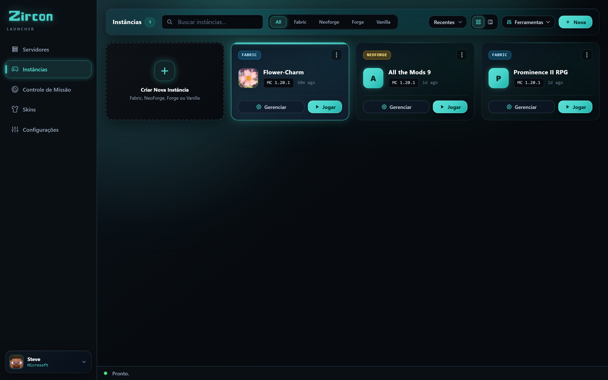
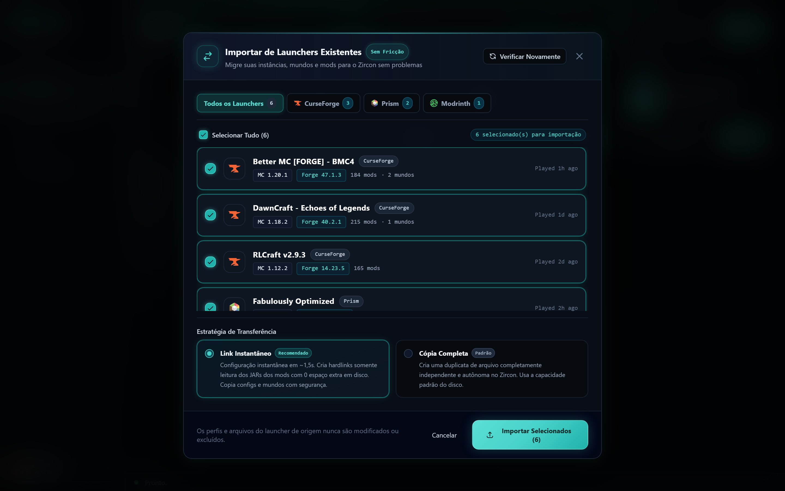
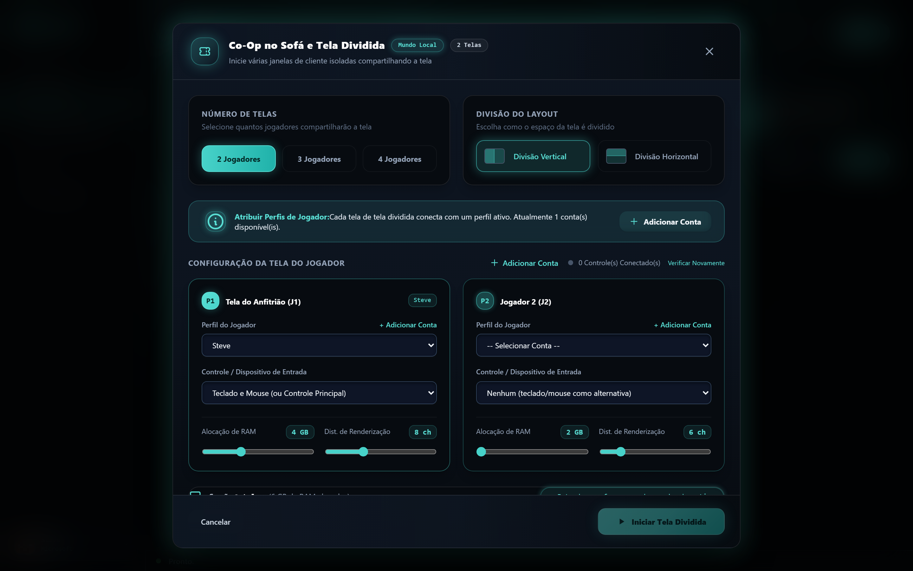
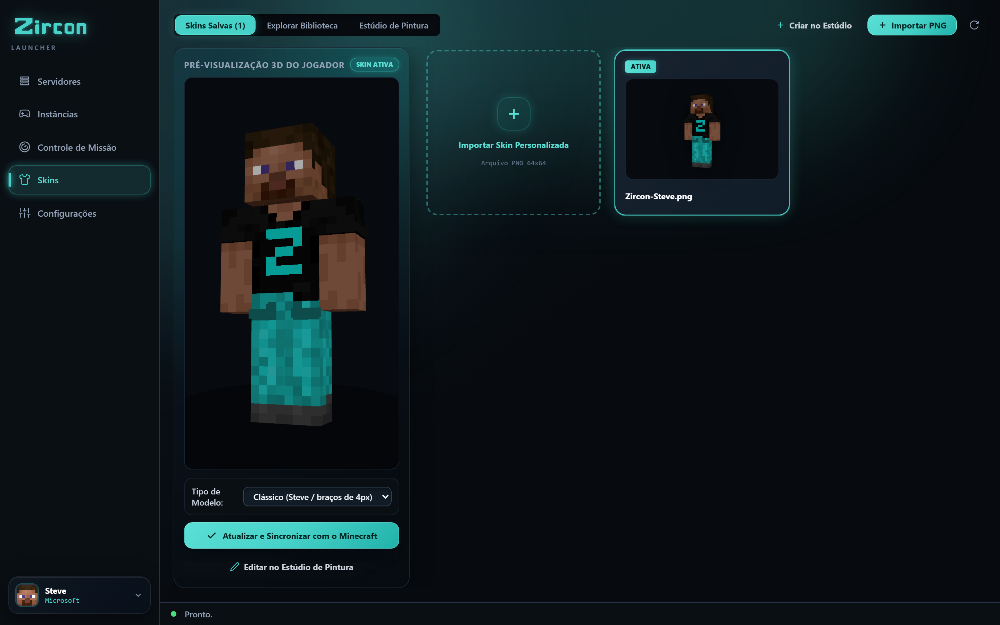

O Zircon elimina incompatibilidades de modpacks para sempre. Escolha um servidor, clique em JOGAR, e cada mod é instalado e verificado criptograficamente em segundos. Além disso: importação com 1 clique do CurseForge & Prism, co-op local para 4 jogadores e descoberta automática na LAN.





Clique em qualquer aba acima ou na imagem para inspecionar detalhes em tela cheia.
Acabe com a discussão de 2 horas no Discord antes da noite de jogos. Basta clicar em JOGAR e aparecer.
O servidor transmite sua Bill of Materials (BOM) exata pela porta 25565 — IDs de mods, hashes de versão, loader e configurações.
O launcher escaneia sua instância local em milissegundos, ignorando arquivos que você já possui e sinalizando apenas o que está faltando.
Arquivos faltantes são baixados em paralelo diretamente dos CDNs do Modrinth e CurseForge. Zero JARs corrompidos, zero incompatibilidade de versões.

Não abandone seus mundos, keybinds ou instâncias de modpack. O Zircon detecta automaticamente seus launchers instalados e os migra sem perdas em menos de 2 segundos.
Detecta automaticamente modpacks, overrides, configurações customizadas e saves de mundo.
Importa árvores de instância, argumentos JVM e saves de mundo.
Preserva pacotes MR, arquivos de índice e resource packs customizados.
Transfere instâncias, backups customizados e pastas de texture packs.
Quando você inicia o Zircon, nosso detector nativo em Rust localiza perfis instalados no seu sistema. Selecione quais instâncias deseja importar, e o Zircon migra tudo para sandboxes limpas e isoladas.
Tudo o que você sempre desejou que outros launchers tivessem — integrado diretamente ao seu app desktop.
Adapte o launcher à sua estética pessoal com cores de destaque customizadas, paletas escuras e estilos de visualização configuráveis.
Jogue em qualquer lugar sem conexão ativa com a internet. Importe mundos single-player existentes, aloque RAM customizada e isole modpacks.
Adicione seus próprios mods client-side opcionais, shaders, resource packs e keybindings a qualquer instância de servidor sem corromper a sincronização.
O motor de gerenciamento self-hosted por trás do Zircon. Sem dores de cabeça com Docker, sem pesadelo de firewall multi-porta. Rode servidores com mods que seus jogadores podem realmente conectar sem suporte técnico.
Rolando sites de mods procurando "a build certa" e torcendo para que coincida com o que seus amigos estão rodando.
Colocando manualmente arquivos de mods em mods/ e deletando os que crasham ao iniciar.
Comparando configurações com seu amigo às 1h da manhã, uma incompatibilidade por vez, enquanto o servidor fica vazio.
Construído para pessoas que querem jogar Minecraft com mods com amigos — não gastar a noite reconciliando versões de mods e logs de crash.
Clique em JOGAR e o Zircon baixa a versão correta do Minecraft e o mod loader — Fabric, Quilt, Forge ou NeoForge — instala os mods e te leva direto para o jogo.
Pesquise e baixe mods do Modrinth e CurseForge com verificações SHA-512 e fingerprint verificadas a cada inicialização. Nada faltando, nada obsoleto.
Login oficial Microsoft — sua senha vai para a Microsoft, nunca para o Zircon. Sem logins compartilhados, sem launchers piratas, sem soluções offline.
Seletor de skins salvas com prévia 3D ao vivo, sincronização cloud oficial Mojang e um explorador de skins da comunidade in-app que busca skins populares via API.
Servidores podem oferecer seus próprios shaders e resource packs. O Zircon aplica eles quando você entra — você só diz sim uma vez, e pronto.
Crie instâncias single-player offline com seus próprios mods, shaders e texture packs. Nenhum servidor necessário — apenas construa em paz.
Um clique, no seu navegador. O Zircon usa o fluxo oficial Microsoft — sua senha nunca toca o app.
Seus servidores salvos, os mais recentemente jogados primeiro — além de recomendações. Cada servidor traz sua própria lista de mods junto.
O Zircon sincroniza e verifica os mods do Modrinth & CurseForge, acorda o servidor se estiver dormindo, e conecta você. Você aparece — totalmente modificado, pronto para ir.
Sem runtimes Electron lentos consumindo gigabytes de memória em segundo plano enquanto você joga. O núcleo do engine desktop do Zircon é escrito inteiramente em Rust compilado para inicialização instantânea, validação de hash em sub-milissegundos e footprint ultraleve do sistema.
Tudo o que você precisa saber para começar com o Zircon.
Quando você entra em um servidor e clica em JOGAR, o Zircon compara o manifesto Bill of Materials publicado pelo servidor contra sua pasta de cliente local. Quaisquer mods faltantes ou atualizados são verificados via hashes SHA-512 e fingerprints do Modrinth & CurseForge, então baixados instantaneamente em paralelo sem arrastar arquivos manualmente.
Sim! O Zircon inclui uma ferramenta nativa de Migração Universal com 1 clique. Ela detecta automaticamente diretórios instalados do CurseForge, Prism Launcher, Modrinth App e ATLauncher, permitindo importar suas árvores completas de instância, saves, keybinds e configurações de mods em menos de dois segundos.
O Zircon permite conectar até 4 gamepads (controles Xbox, PlayStation ou Bluetooth genéricos) e iniciar múltiplas janelas de jogo isoladas organizadas em uma grade seamless split-screen no seu monitor ou TV. Cada jogador controla seu próprio personagem com seu próprio gamepad.
Sim! O Zircon suporta nativamente buscar, instalar e sincronizar mods diretamente tanto do Modrinth quanto do CurseForge com zero configuração de chave de API necessária. Ambos os repositórios são totalmente integrados out-of-the-box.
Sim, o Zircon é source-available sob a Business Source License 1.1 (BSL 1.1). Tanto o launcher do cliente quanto o gerenciador de servidor self-hosted são 100% gratuitos para jogadores, homelabbers e redes de gaming. Todo o codebase está aberto para inspeção pública, self-hosting e contribuição da comunidade no GitHub.
Sim. A autenticação é realizada via OAuth 2.0 PKCE padrão da Microsoft no seu navegador de sistema padrão. Suas credenciais de login vão diretamente para os servidores de login da Microsoft e nunca são acessadas, manipuladas ou armazenadas pelo Zircon.
O Zircon suporta nativamente Fabric, Quilt, Forge e NeoForge. O launcher instala automaticamente a versão requerida do mod loader e o runtime Java Adoptium Temurin verificado quando você inicia uma instância ou entra em um servidor.
Baixe o launcher gratuito open-source, ou obtenha o gerenciador de servidor self-hosted.